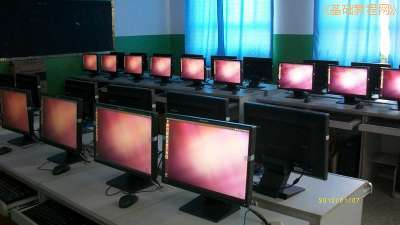
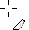
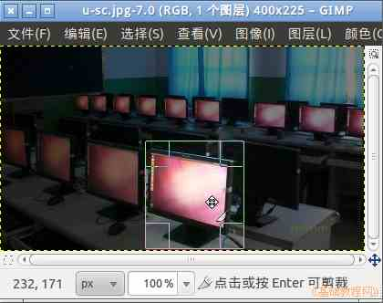
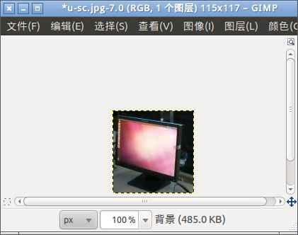
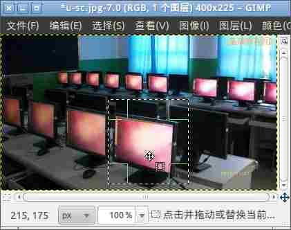
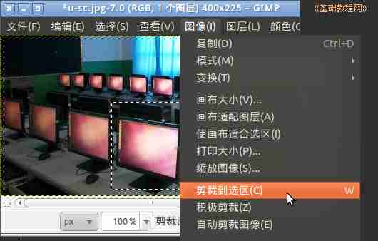

GIMP操作基础教程
作者：Teliute 来源：基础教程网
1、裁切工具
1）启动 gimp，打开一幅合影的图片，或者是一幅只需要其中一部分的图片，如下图；

2）在工具箱中点击剪裁工具 ，一个刻刀的图标，把鼠标移到图像中，指针变成一个十字光标，带一个刻刀尾巴；
3）按住鼠标左键，在图片中拖选一个区域，例如框住最下边的电脑，这时周围图像变暗，框住的方框四边可以拖动改变选区大小；

4）拖动选区的四个边，大小合适后在方框中单击左键，就可以把四周的图片裁切掉，只剩下选中的部分；

5）点菜单“文件－另存为”(2.8版的是“文件－导出”命令)，以 cut.jpg 为文件名保存一下文件；
6）另一种剪裁的方法是，先用框选工具选中所要的部分；

7）然后点菜单“图像－剪裁到选区”命令，也可以裁掉多余的图像部分；

本节学习了GIMP中裁切工具的基本用法，如果你成功地完成了练习，请继续学习；
本教程由86团学校TeliuTe制作|著作权所有
基础教程网：http://teliute.org/
美丽的校园……
转载和引用本站内容，请保留版权信息和本站链接。
|
|